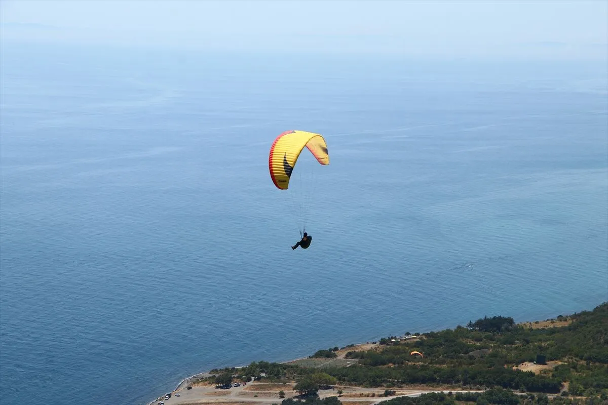
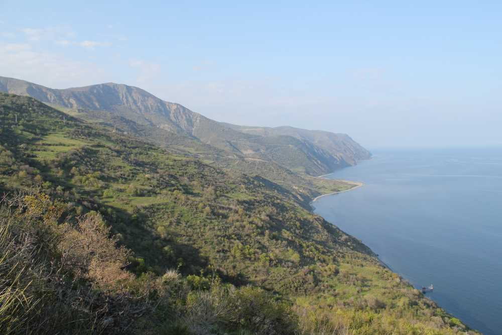
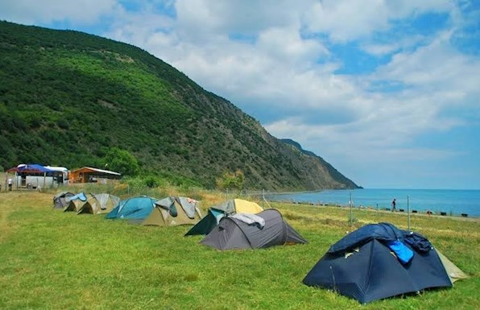

Uçmakdere Hakkında Genel Bilgiler
Tekirdağ'ın Şarköy İlçesi'ne bağlı eski bir Rum köyü olan Uçmakdere eski yerleşim dokusunu ve yaşam kültürünü devam ettirmektedir. İstanbul'a olan yakınlığı sayesinde çok sayıda ziyaretçiyi ağırlayan Uçmakdere, Ganos Dağları'nın yeşili ve Marmara Denizi'nin mavisi eşliğinde ziyaretçilerine yöresel köy ürünleri ve köy yaşamıyla buluşmanın keyfini yaşatmaktadır. Sayfanın altında ilgili bazı görselleri bulabilirsiniz.Etkinlikler
Uçmakdere, doğayla iç içe huzurlu bir atmosfere sahip olduğu için birçok açık hava etkinliği için çok uygundur. İşte Uçmakdere’de yapılabilecek bazı etkinlikler:
- Ganos Dağları'nın yüksek yamaçlarından Marmara Denizi’ne karşı yapılan uçuşlar oldukça ünlüdür.
- Türkiye’de yamaç paraşütü tutkunlarının favori noktalarından biridir.
- Deneyimli pilotlarla tandem uçuş yapabilirsiniz.
1. Yamaç Paraşütü
- Çam ormanları ve zeytinliklerle çevrili patikalarda yürüyüş yapılabilir.
- Ganos Dağları eteklerinde doğa fotoğrafçılığı için mükemmel noktalar vardır.
2. Doğa Yürüyüşü ve Trekking
- Sahil boyunca çadır kurabileceğiniz pek çok alan bulunur.
- Sessiz, doğayla baş başa bir gece geçirmek isteyenler için idealdir.
3. Kamp Yapmak
Konum Bilgileri
Konum: Tekirdağ il merkezine yaklaşık 42 km, Şarköy ilçesine 36 km uzaklıktadır .
Uçmakdere İlgili Bazı Fotoğraflar
  